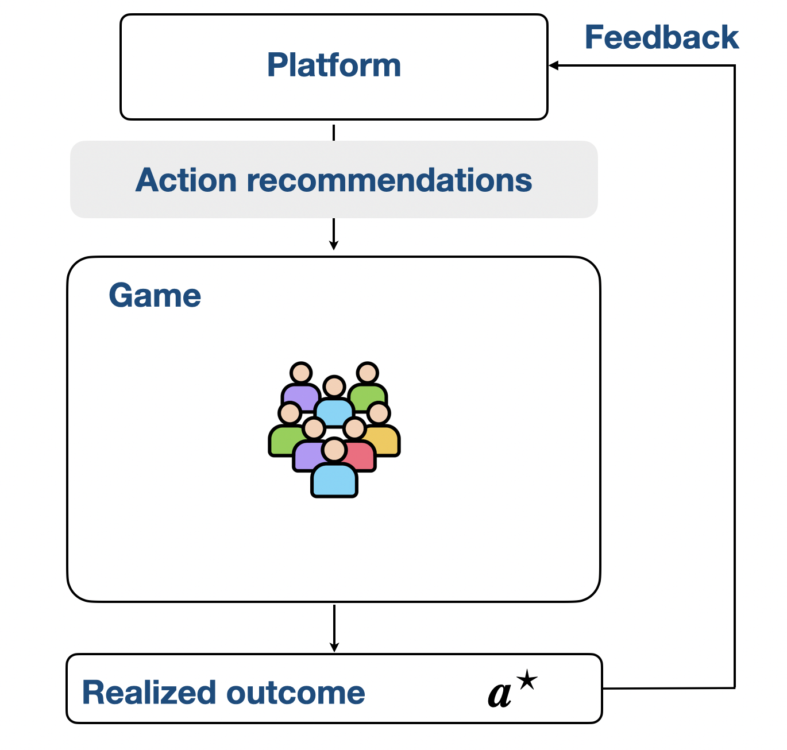
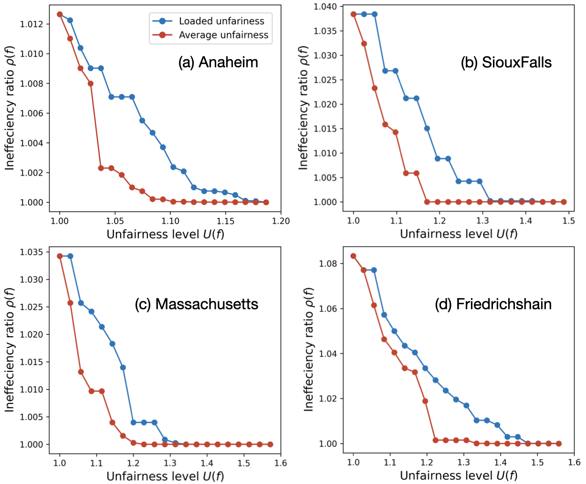
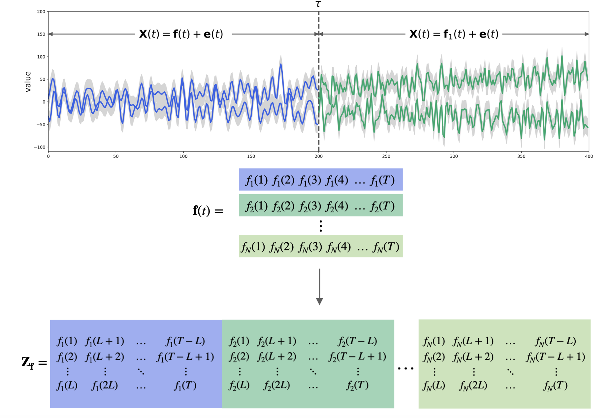
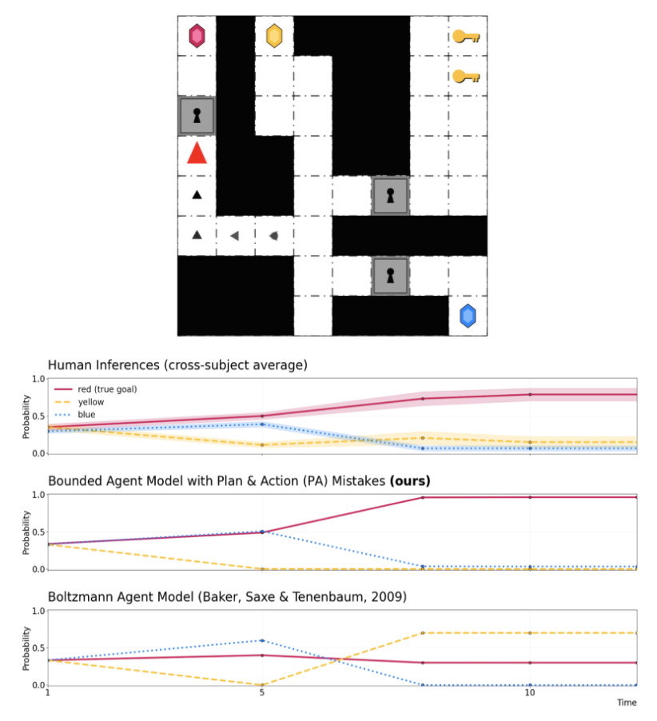

Research

Learning Preferences and Coordination in Strategic Settings
This project studies how to learn agent preferences and design recommendation or coordination mechanisms in unknown games. It combines ideas from game theory, online learning, and optimization to understand strategic behavior and enable efficient coordination when the underlying game is not known in advance.

Fair allocation and pricing in congestion games
This project focuses on the studying the effecincy-fairness tradeoff intrinsic to the congestion games model
focusing on the problem of fair traffic assignement and congestion pricing.
We propose rebust fairness metrics in such models and study algorithms for achieving fair traffic assignements that can be enforeced through fair tolls.

Mixed-autonomy traffic optimization
This project aims to reduce instabilities ("stop-and-go" waves) in mixed-autonomy traffic flow by controlling a small proportion of autonomouse vehicles (AVs).
We developed a hirarical control archetecture based on local and global traffic state.
The developed controller was deployed at a large scale in a 100-vehicle field experiment conducted on the I-24 highway during the morning rush hour.
Overall, our results show that a small proportion of well-controlled AVs is enough to significantly improve traffic flow and fuel efficiency for all drivers on the road.

Change Point Detection
Detection of abrupt changes in time series data is an important subject of study in applied statistics that covers many real-life applications, from medical diagnosis to fraud detection. In this project, we develop, theoretically analyze, and empirically evaluate an online algorithm for change point detection (CPD) in multivariate time series based on multivariate singular spectrum analysis.

Baysian Theory of Mind: Modelling Human Mistakes
Humans have an innate ability to reason about the goals of others in their environment by observing their behavior. Remarkably, we, as humans, can do so even in the presence of mistakes or failures to achieve such goals. In this project, we explore the question of how to allow machines to have similar capabilities of reasoning about the mistakes of other agents in their environments. To do so, we model agents and their environments as generative processes that account for sub-optimality at three levels of decision-making: goal confusion with semantically similar goals, errors in planning, and mistakes in taking actions.